Introduction
Erigon is a next-generation Ethereum implementation that introduces several new concepts:
- A modular client design, enabling parallelized development of the client
- New (“flat”) model of storing Ethereum state, allowing a lower disk footprint
- Preprocessing of data outside of the storage engine, making database write operations faster by a magnitude
- Staged synchronization technique, allowing very fast synchronization
This brings the following benefits to the node operators:
-
Much lower disk footprint
- 1.2TB for archive node, 430GB for pruned node.
-
Faster sync speed
- Over 300 Mgas/s at tip of Ethereum mainnet.
- An archive node can be bootstrapped in under 3 days.
- Performance improvements allow Erigon to run even on HDD.
-
Crash resilience
- Forceful shutdown or power failure cannot damage Erigon’s database.
-
New vision of modularity
- P2P and web3 RPC services can be run as separate components on a remote machine.
-
Full support for OpenEthereum/Parity
trace_API, includingtrace_filter
This book documents some of the know-hows that made these achievements possible.
Why MDBX is our storage engine
We often get asked why we opted for our current storage engine, MDBX.
Why not LevelDB / RocksDB?
Answer is pretty simple: no MVCC.
MVCC allows us to "stitch together" more complex data objects from more normalised form that is stored in the DB, without loss of consistency (if you do it all in a single read-only transaction). This is used quite a lot in the RPC daemon and simplifies the code a lot. You do not need to explicitly link all the data in the application-level code, you just trust that the database will give you consistent snapshot.
Other than that, Level and Rocks are not ACID. This makes them extremely brittle and prone to corruption on application crash or power failure. Given that node sync from genesis is not cheap or instantaneous, this is a non-starter for us.
Why not BadgerDB?
BadgerDB, unlike Level or Rocks, does provide transactions. However, there is a next issue we run into: Badger is based on Log-structured merge-tree.
Badger (and all LSM-based DBs) has background compaction. It's good for some projects and bad for others.
In Erigon we eliminated most of concurrency (goroutines) for many reasons (too many things happening at the same time). We found that modern SSD (and NVMe) are still pretty bad with concurrent writes - they are way better than HDD, but sequential read is still order of magnitude faster than random reads. Meaning 1 thread touching disk vs 2 threads touching disk - can show 10x degradation.
How does this apply to us?
We removed parallel writes and moved to control all disk touches. Now we don't really care about "how much WPS database can handle" because now we can fit all writes into 1 write transaction. Doesn't matter if it happens once per 10 minutes or once per 1 second - as long as it's not thousands of parallel WPS. In LMDB 1 write transaction is equal to 1 fsync syscall - all writes during transaction are happening in RAM.
LSM databases (Badger, LevelDB) are slower on average for random reads, and that read times are more volatile. B+tree is faster and more predictable for random reads.
Why not BoltDB?
Unlike Badger, Bolt is a Go library, providing storage engine based on B+tree. It originally fit well, and we had BoltDB backend available until September 2020.
Bolt lacks certain advanced features that we found useful, like LMDB's sorted duplicates (DupSort). It allows to save space without resorting to compression by storing repetitive keys only once.
Bolt is not actively maintained anymore, although there is an active fork by etcd team. And finally, it is a Go library, precluding usage and binary compatibility with Silkworm and Akula.
For all these reasons we switched to LMDB.
Why not LMDB?
We used LMDB in the past, but have moved to MDBX which is a fork of LMDB with multiple improvements:
- Database file growth "geometry" works properly. This is important especially on Windows. In LMDB, one has to specify the memory map size once in advance (currently we use 2Tb by default), and if the database file grows over that limit, one has to restart the process. On Windows, setting memory map size to 2Tb makes database file 2Tb large on the onset, which is not very convenient. With MDBX, memory map size is increased in 2Gb increments. This means occasional remapping, but results in a better user experience.
- MDBX has more strict checks on concurrent use of the transaction handles, as well as overlap read and write transaction within the same thread of execution. This allowed us to find some non-obvious bugs and make behaviour more predictable.
- Over the period of more than 5 years (since it split from LMDB), MDBX accumulated a lot of safety fixes and heisenbug fixes that are still present in LMDB to the best of our knowledge. Some of them we have discovered during our testing, and MDBX maintainer took them seriously and worked on the fixes promptly.
- When it comes to databases that constantly modify data, they generate quite a lot of reclaimable space (also known as "freelist" in LMDB terminology). We had to patch LMDB to fix most serious drawbacks when working with reclaimable space (analysis here: https://github.com/ledgerwatch/erigon/wiki/LMDB-freelist-illustrated-guide). MDBX takes special care of efficient handling of reclaimable space and so far no patches were required.
- According to our tests, MDBX performs slightly better on our workloads.
- MDBX exposes more internal telemetry - more metrics of what happening inside DB. And we have them in Grafana - to make better decisions on app design. For example, after complete transition to MDBX (removing LMDB support) we will implement "commit half-full transactions" strategy to avoid spill/unspill disk touches. This will simplify our code further without affecting performance.
- MDBX has support for "Exclusive open" mode - we using it for DB migrations, to prevent any other reader from accessing the database while DB migration is in progress.
Freelist
How modifying the data gives rise to freelist
MDBX supports Multi Version Concurrency Control (MVCC), which is a feature that allows readers of the database "lock in" a view of the database and that that view be "frozen", undisturbed until the reader disconnects. By reader here we understand any transaction (read-only or writable). There is a limitation on how many readers may simultaneously connect, but once allowed to connect, the reader can view the "frozen" image of the database for as long as required. Maintenance of this property puts constraints on how modification of data can be performed. In particular, all modification of data by writeable transactions need to be done using "copy on write" pattern. For example, lets imagine this state of the database before modifying an element with value v5:
To ensure that any reader that is currently looking at the database via the root page pointer, or in fact any reader that may come along during the execution of our modifications, sees undisrupted image of the database, our modification must not change any pages that are reachable from the root pointer. Therefore, we create a new root pointer, and create an alternative B+-tree that will contain previous database image with our modifications applied:
As shown on the picture, this modification will require allocation of four pages (either by increasing the file size, or by recycling previously freed space): H, G, I, J, and three pages A, C, F will be marked as potentially recyclable.
The list of these potentially recyclable pages is called freelist. Most of the pages added to the freelist during modifications, cannot be recycled while the writeable transaction is in flight. This is because any readers connecting before the writable transaction commits, will still see the root and all the pages reachable from it. This is similar to the problem garbage collector faces when determining unreachable objects. Starting points of reachability analysis for a garbage collector are global variable and stack of active threads. Similarly, the starting point for the MVCC reachability analysis are the root pointer (only one global variable) and the root pointers grabbed by any active readers:

How deleting the data gives rise to freelist (in transaction objects)
Deleting is a type of modification and all said before about modifications apply here. With deletions, however, there is one more interesting case - pages that were allocated during the transaction (for modification) but then subsequently freed by deletions. For example, if, after modification shown above, we decided to delete record with values v9 and v6, we would end up with an empty page. But this is the page we have previously allocated, and it is not reachable from the root page pointer, therefore it can be reused straight away. Such pages are called "loose pages":
In the description below, there is a distinction between emptied pages that cannot be recycled yet, and loose pages. There are stored in the different data structures.
In MDBX, data can be deleted in two main ways:
- deleting keys from a cursor
- removing an entire table (DBI)
Deleting keys from a cursor may cause rebalancing of the B+-tree, because one of the invariants that need to be maintained in a B+-tree says that all pages, except for the root page, must be at least half-full. So, if deleting keys makes a page less than half-full, rebalancing happens - keys and values are moved between pages. Some of these rebalancing cause some pages become empty.
Removing an entire table (DBI) is a simpler operation than deleting keys from a cursor, because it does not require any rebalancing. Any table always starts with its own root page, and pages are never shared between tables. Therefore, removing an entire table requires finding all the pages that belong to that table.
As we see from above, both ways may produce new empty pages. These empty pages are usually in middle of the database file, and we would like to fill them up (later) with the new data, to prevent the database file from growing too fast.
Since any changes to the database can only occur as a result of a writeable transaction, a transaction object should have some transient data structures to keep the list of pages this transaction emptied. At the time of the transaction commit, these structures are converted into persistent form inside the database. There are two transient data structures in which a transaction object keeps the IDs of emptied pages:
MDBX_IDL mt_free_pgs;TypeMDBX_IDLstands for "ID list", and it is a pointer for a list of 8-byte Page IDs, starting with the length of the list at the index 0. Therefore, you can often seetxn->mt_free_pgs[0]as the expression to take the length of the page ID list. This list is pre-allocated to certain size, and therefore, if something needs to be added, such list sometimes needs to be reallocated and moved.MDBX_page *mt_loose_pgs;TypeMDBX_pageis the structure describing page header. At the beginning of any page, there is a space for either page number of a pointer to another page header. Therefore,mt_loose_pgsis the head of a linked list of page headers, which is convenient for adding and remove pages one by one.
Conceptually, these two data structures of a transaction object contain the same kind of information - pages emptied by the transaction, but they are kept and maintained in different forms (slice of IDs and linked list of page headers). The reason for this is as follows. Loose pages from mt_loose_pgs are allowed to be re-used during the same transaction, whereas the pages from mt_free_pgs are not allowed to be re-used. The re-use happens in the function mdbx_page_alloc. This distinction about allowed re-use drives the decisions on when emptied pages are added to one list or another. Pages that have been allocated by this current transaction (either from the expansion of the database or from recycling of the freelist), are known not to be accessed by any other transactions. Such pages end up being marked with P_DIRTY flag. Therefore, having such flag becomes necessary (but not sufficient) criteria for a page to end up in the mt_loose_pgs linked list when emptied.
- When an entire table is removed, the emptied pages always get added to the
mt_free_pgs, ostensibly for efficiency. If there are many page IDs that were emptied, it is very unlikely that many of them have been allocated by the current transaction, so they are all added to themt_free_pgs, even those some of them might be eligible formt_loose_pgs. The function where appending tomt_free_pgsis performed ismdbx_drop0. - When rebalancing is performed, if a page has too few entries, and its neighbour page is also just at the threshold or below, the two pages are merged. This merging creates an empty page, and it is added to the
mt_loose_pgsif it is marked withP_DIRTYflag and it is not part of the "special" freelist tableFREE_DBI. Otherwise, it is added to themt_free_pgs
At the transaction commit, both structures mt_free_pgs and mt_loose_pgs are effectively merged together and persisted as a record in the "special" freelist table FREE_DBI. Such record has transaction IDs as a key, and the value is the encoding of the sorted list of page IDs, 8 byte per ID. Transaction IDs increase monotonously throughout the life of the database, so they can be used as "versions" for the purposes of MVCC (Multi Version Concurrency Control). The function that persists these two data structures is mdbx_freelist_save, and it has some nuances that cause performance issues when freelists become large. I will describe the mechanics of this function and the issues later...
Old pages state in the environment object
Environment object has a field MDBX_pgstate me_pgstate;, which is a structure consisting on two elements. These two elements are "aliased" (using #define directive) to the name me_pghead and me_pglast accordingly.
The first element, me_pghead is a pointer to the list of page IDs. These are the IDs of pages that can be re-used by the current transaction, if required. Page IDs get into the me_pghead list by being read from the beginning of the freelist table FREE_DBI. You may remember that the keys in the freelist tables are transaction IDs, or in other words, version numbers, indicating "when" certain page IDs became part of the freelist.
The second element, me_pglast, is a number representing the version number (transaction ID), whose freelist entry was read from the FREE_DBI table last, and that entry is now added to the me_pghead list.
Both elements are only modified during the execution of mdbx_page_alloc function. That function tries to search through the old freelists, starting from the oldest one (smallest transaction ID), going to the newer ones, trying to find a run of consecutive pages of desired length. As the search continues, me_pghead gets expanded, and me_pglast increases.
DupSort feature explanation
If KV database has no concept of "Buckets/Tables/Collections" then all keys must have "Prefix". For example to store
Block bodies and headers need use b and h prefixes:
b1->encoded_block1
b2->encoded_block2
b3->encoded_block3
...
h1->encoded_header1
h2->encoded_header2
h3->encoded_header3
...
Of course this is 1 byte per key overhead is not very big. But if DB provide concept of named "
Buckets/Tables/Collections" then need create 2 tables b and h and store there key without prefixes. Physically table
names will stored only once (not 1 per key).
But if do 1 step forward - and introduce concept of named "Sub-Buckets/Sub-Tables/Sub-Collections". Then in will allow to store physically once longer prefixes.
Let's look at ChangeSets. If block N changed account A from value X to Y:
ChangeSet -> bigEndian(N) -> A -> X
ChangeSet- name of TablebigEndian(N)- name of Sub-TableA- key inside Sub-TableX- value inside Sub-Table
MDBX supports
MDBX supports "tables" (it uses name DBI) and supports "sub-tables" (DupSort DBI).
#MDBX_DUPSORT
Duplicate keys may be used in the database. (Or, from another perspective,
keys may have multiple data items, stored in sorted order.) By default
keys must be unique and may have only a single data item.
MDBX stores keys in Tree(B+Tree), and keys of sub-tables in sub-Tree (which is linked to Tree of table).
Find value of 1 key, still can be done by single method:
subTableName, keyInSubTable, value := db.Get(tableName, subTableName, keyInSubTable)
Common pattern to iterate over whole 'normal' table (without sub-table) in a pseudocode:
cursor := transaction.OpenCursor(tableName)
for k, v := cursor.Seek(key); k != nil; k, v = cursor.Next() {
// logic works with 'k' and 'v' variables
}
Iterate over table with sub-table:
cursor := transaction.OpenCursor(tableName)
for k, _ := cursor.SeekDup(subTableName, keyInSubTable); k != nil; k, _ = cursor.Next() {
// logic works with 'k1', 'k' and 'v' variables
}
Enough strait forward. No performance penalty (only profit from smaller database size).
MDBX in-depth
Max key size: 2022byte (same for key of sub-Table)
Let's look at ChangeSets. If block N changed account A from value X to Y:
ChangeSet -> bigEndian(N) -> A -> X
ChangeSet- name of TablebigEndian(N)- name of Sub-TableA- key inside Sub-TableX- value inside Sub-Table
------------------------------------------------------------------------------------------
table | sub-table-name | keyAndValueJoinedTogether (no 'value' column)
------------------------------------------------------------------------------------------
'ChangeSets' |
| {1} | {A}+{X}
| | {A2}+{X2}
| {2} | {A3}+{X3}
| | {A4}+{X4}
| ... | ...
It's a bit unexpected, but doesn't change much. All operations are still work:
subTableName, keyAndValueJoinedTogether := cursor.Get(subTableName, keyInSubTable)
{N}, {A}+{X} := cursor.Seek({N}, {A})
You need manually separate 'A' and 'X'. But, it unleash bunch of new features! Can iterate in sortet manner all changes in block N. Can read only 1 exact change - even if Block changed many megabytes of state.
And format of StorageChangeSetBucket: Loc - location hash (key of storage)
------------------------------------------------------------------------------------------
table | sub-table-name | keyAndValueJoinedTogether (no 'value' column)
------------------------------------------------------------------------------------------
'StorageChanges' |
| {1}+{A}+{inc1} | {Loc1}+{X}
| | {Loc2}+{X2}
| | {Loc3}+{X3}
| {2}+{A}+{inc1} | {Loc4}+{X4}
| | {Loc5}+{X5}
| | {Loc6}+{X6}
| | ...
Because column "keyAndValueJoinedTogether" is stored as key - it has same size limit: 551byte
MDBX, can you do better?
By default, for each key MDBX does store small metadata (size of data). Indices by nature - store much-much keys.
If all keys in sub-table (DupSort DBI) have same size - MDBX can store much less metadata.
(Remember! that "keys in sub-table" it's "keyAndValueJoinedTogether" - this thing must have same size). MDBX called this
feature DupFixed (can add this flag to table configuration).
#MDB_DUPFIXED
This flag may only be used in combination with #MDB_DUPSORT. This option
tells the library that the data items for this database are all the same
size, which allows further optimizations in storage and retrieval. When
all data items are the same size, the #MDB_GET_MULTIPLE, #MDB_NEXT_MULTIPLE
and #MDB_PREV_MULTIPLE cursor operations may be used to retrieve multiple
items at once.
It means in 1 db call you can Get/Put up to 4Kb of sub-table keys.
See also
Downloader design
Infrastructure for downloading headers, block bodies, and receipts that was inherited from go-ethereum does not integrate well with the concept of Staged Sync in Erigon. The code for this infrastructure is mostly contained in eth/downloader package. We would like
to replace it with more minimalistic infrastructure that fits better into "Staged Sync" concept with more judicious use of concurrency and
greater control over database objects, such as transactions.
Current code
Code for the new downloader process is split between packages cmd/headers/download, turbo/stages, turbo/stages/headerdownload, /turbo/stages/bodydownload.
High-level idea about header download
Header downloader process (represented by the type headerdownload.HeaderDownload) maintains data structure containing the collection of "chain bundles". Each chain bundle consists of one anchor and some chain links. Each link corresponds to a block header. Links are connected to each other by ParentHash fields. If ParentHash of some links do not point to another link in the same bundle, they all must point to the anchor of this bundle. Here is graphic representation of chain bundle:

And this is an example of multiple links pointing to the same anchor:
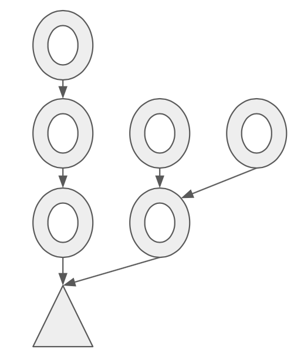
As Header downloader process generates messages to be sent to other network peers, and as it receives messages from the peers, it
keeps updating its collection of chain bundle. In many cases, new messages from other peers contain more block headers, and
processing of these messages results in extending the existing bundles, merging bundles together, or appearance of new bundles.
All such processing is performed by the member function ProcessSegment declared in the file turbo/stages/headerdownload/headers_algo.go.
As the name of the function suggests, it processes "chain segments" that are received from the peers. What are the chain segments?
Chain segments are simply sequences of headers connected to one another, without any branching. For example, this is a chain segment:
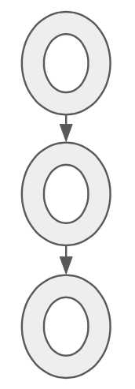
But this is not:
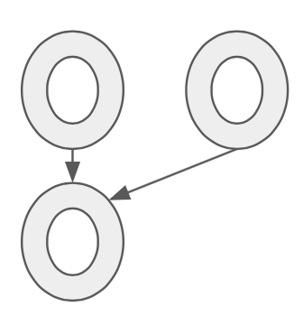
All the messages containing groups of headers are first split into segments before they are passed to the ProcessSegment function.
This makes processing algorithms simpler than they would have been if branching bundles needed to be considered.
The goal of adding more segments is to eventually construct a continous chain of headers starting from some pre-determined lowest point. This chain can be then verified (in the sense of Proof Of Work or Proof of Authority verification), and committed to the database. Once a chain of headers is committed to the database, the headers it contains may be evicted from memory to make space for more recent headers, and so on. Eventually, the heaviest existing header chain (also known as "canonical chain") is assembled from segments, verified, and committed to the database, and turbo-geth can move to the next stage (downloading block bodies).
Storing chain links in memory
Every chain link is represented by this structure:
type Link struct {
blockHeight uint64
header *types.Header
hash common.Hash // Hash of the header
next []*Link // Allows iteration over links in ascending block height order
persisted bool // Whether this link comes from the database record
preverified bool // Ancestor of pre-verified header
idx int // Index in the heap
}
Field blockHeight has block height (also known as block number), for faster comparisons when the chain link is used in
data structures like binary heap (extracting block height from the header.Number, which is *big.Int has non-trivial penalty,
apparently).
Field header is simply a pointer to the block header associated with this chain link. Field hash is a shorthand
for header.Hash(), because the latter may also involve some extra work.
Field next is essentially the reverse of the
header.ParentHash links and allows traversing the chain links from parents to children, which is necessary for some algorithms.
Field persisted is a flag that is set when a chain link gets committed into the database (persisted).
Field preverified
(it will probably be replaced by just verified soon) is a flag that is set for set of headers that are known to belong to the
canonical chain (i.e. they have been added to the chain and the probability of them being removed is very close to zero).
The hashes of such pre-verified headers are listed in the file turbo/stages/preverified_hashes_mainnet.go and similar (for other
network). Any header that is a parent of a pre-verified header, is considered to be pre-verified. Theoretically, it would be
enough to only specify one pre-verified header. But in practice, it makes sense to have a lot of them so that verification
does not require loading the entire header chain first.
Field idx has a very specific purpose. When chain link objects are placed into a priority queue (binary heap), it is useful
to remove elements not always from the head of the priority queue (top of the binary heap), but from any location. Implementation
of binary heap in Go allows that using function heap.Remove, which requires integer argument - position of the element in the
heap. Using idx field, the actual position of chain links within binary heap is tracked (it gets updated in the Swap function).
Priority queues for persisted and non-persisted chain links
Header download process only allows limited number of chain link in memory (by default 1048576). Currently, half of these "slots" are allocated to the persisted chain links, while another half - to the non-persisted chain links. In order to decide which chain links to evict when the slots become full, two priority queues are used - one for persisted chain links, another - for non-persisted chain links. The persisted links priority queue puts the link with the lowest block height on the top, therefore the "oldest" headers are getting cleaned up from memory first. The non-persisted link priority queue, on the other hand, puts the link with the highest block height on the top, therefore the "youngest" headers are getting clean up from memory first. The "youngest" headers that got removed, will need to be re-downloaded again. The idea about keeping "younger" persisted links and "older" non-persisted links is based on the observation that most processing is happening on the "boundary" between persisted and non-persisted chains.

How new headers are queried from the peers?
In order to keep up the "supply" of new header segments downloaded from the network peers, the header download process regularly issues two types of queries to the peers:
- Skeleton query. It is implemented by
RequestSkeletonfunction in theturbo/stages/headerdownload/header_algos.gofile. Skeleton query takes advantage of theSkipattribute of theethprotocol messageGetBlockHeaders. IfSkipis set to zero, then the protocol message means querying block headers forming chain segement, i.e., they are following one another. IfSkipis not zero (in the case ofRequestSkeletonit is8*192=1536), the protocol message means querying headers separated by 1536 other headers from each other. For example, messageGetBlockHeaders{Number: 1000, Length: 5, Skip: 6}, queries headers with block heights1000,1006,1012,1018, 1024`. Note that skeleton queries are only generated when current number of non-persisted chain bundles (which is equal to number of anchors) is below certain threshold (currently 16). This is because processing an answer to a skeleton request would normally create up to 192 new anchors, and then it will take some time for the second type of queries (anchor extension queries) to fill the gaps and so reduce the number of anchors. - Anchor extension query. It is implemented by
RequestMoreHeadersfunction in theturbo/stages/headerdownload/header_algos.gofile. The function uses an auxiliary data structure,anchorQueueto decide which anchors to select for queries first. This structure,anchorQueueis a priority queue of anchors, priorities by the timestamp of latest anchor extension query issued for an anchor. Anchors for which the extension queries were not issued for the longest time, come on top. The anchor on top gets repeated query, but only after certain timeout (currently 5 second) since the last query, and only of the anchor still exists (i.e. it has not been extended yet). Also, if an anchor gets certain number of extension requests issued (currently 10), but without luck of being extended, that anchor gets invalidated, and all its descendants get deleted from consideration (invalidateAnchorfunction). This would happen if anchor was "fake", i.e. it corresponds to a header without existing ancestors.
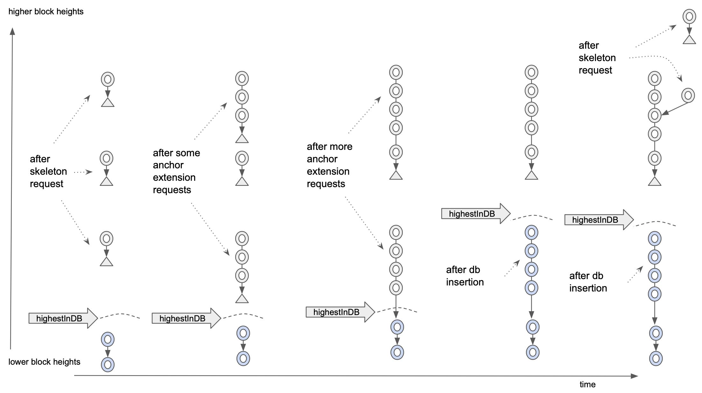
The picture above illustrates (in a simplified manner) how the two types of queries work together. Time line is from left to right,
block heights increase from bottom to top. We start with some persisted headers (in light blue). Then, a skeleton request is issued
(it always start with highestInDb block height to make sure we make progress even if some data get lost). When response from the
skeleton request is processed, we normally end up with multiple anchors attached to the single-header chain bundles. While there are
many anchors, more skeleton requests are not issued, until the number of anchors goes below certain threshold. At this time, only
anchor extension requests are issued, and the chain segments that arrive in response to those requests, cause the anchors to be
replaced by the segments (extending down), until some chain bundles merge, and, as a result, anchors disappear. If any bundle gets
connected to a persisted chain link (light blue), this allows the header insertions into the database (function InsertHeaders in
turbo/stages/headerdownload/header_algos.go file gets invoked periodically to check there are some non-persisted chain links
are connected to persisted links. After such insertion into the database, the highestInDb marker moves up. This means that the next
skeleton query will target higher block heights. On the far right in the picture, we see the results of the second skeleton query.
Although it does not usually happen, it is shown that the skeleton query returned the header on the same block height which is different
from what we had previously. This is normal occurrence, because we assume that the header chain can fork at any time, therefore
the data structures like chain bundles are used instead of simply chain segments. Eventually, the forked headers will also be persisted
into the database if all their ancestors are also persisted.
How chain segments received from the peers are added to the collection of chain bundles.
As mentioned previously, header download process maintains a collection of chain bundles in memory. That collection is "held" by
the fields links and anchors of the type HeaderDownload, declared in the file turbo/stages/headerdownload/header_data_struct.go.
Both of these fields are mappings from common.Hash to a Link pointer or to a Anchor pointer, respectively. As mentioned previously,
there are limits (to prevent memory exhaustion attacks) on the amount of chain links and anchors referenced by these mappings.
In order to enforce these limits, priority queues linkQeue, pesistentLinkQueue, and anchorQueue are used. The mappings themselves
are crucial in the processing of the new header segments received from the peers.
First of all, there is no guarantee that a message received from a peer, contains a chain segment. It may contain a collection of
disparate headers (for example, in a response to the skeleton query), or any branched chain bundle (if a peer decided to send an
unsolicited, but still useful bunch of headers). Therefore, any message received from a peer, needs to be split into chain segments.
This is the job of the SplitIntoSegments function in the turbo/stages/headerdownload/header_algos.go file. It takes a collection
of headers and return a collection of chain segments in a specific order. This order is the ascending order of the lowest block height
in the segment. If we attach segments in such order, we guarantee that we will reconstruct the entire chain bundle, if the message
prior to the splitting was a bundle, as demonstrated on the following illustration.
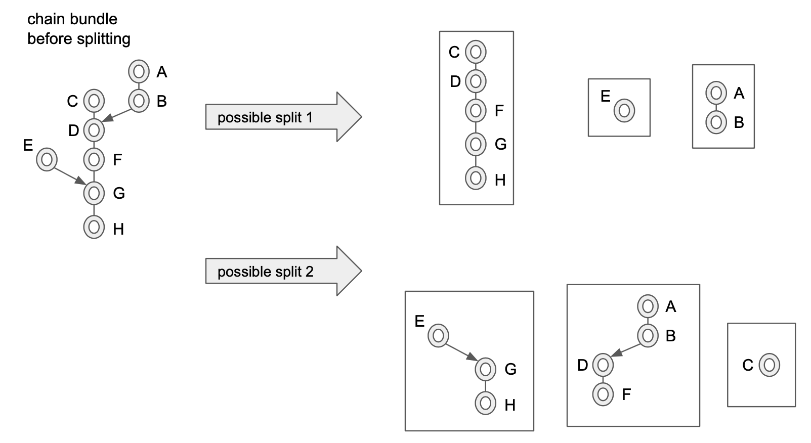
The illustration above also demonstrates that there may be many possible ways to split a chain bundle into segments. The function
SplitIntoSegments implements just one possibility, where the split in done in perhaps more segments that is strictly necessary,
but with the advantage of simpler algorithm.
Once segments are identified and ordered appropriately for the insertion, they are passed into ProcessSegment function, declared
in the turbo/stages/headerdownload/header_algos.go file. This function starts with attempting to find an attachment of the new
segment to an existing link, or an existing anchor, or both. This is the job of functions findLink and findAnchor.
Function findLink is trying, using the links mapping, to find the highest existing link that the new segment can be attached to.
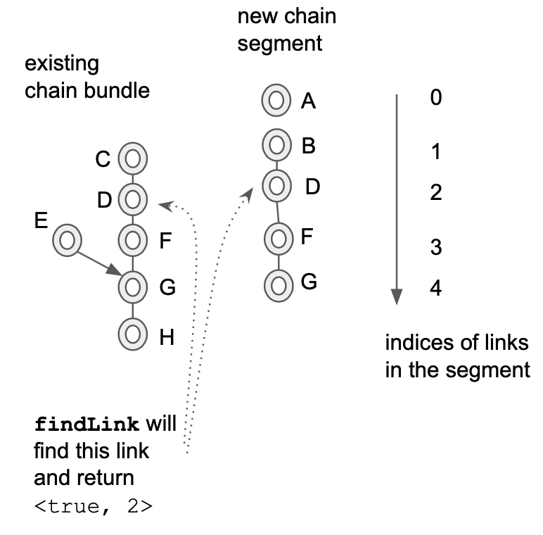
In the illustration above, it is assumed that the chain links marked by the same letters, for example, F and G, are identical,
and they have the same hash, and they can be found using links mapping by that hash. The illustration also demonstrates that it is
possible (and it is quite common) for the header download process to receive the same headers multiple times, like the headers
F and G in the example. This means, in this example, that only chain links A and B will be used to extend the existing
chain bundle, because F and G headers are already present.
Function findAnchor tries to finds (using anchors mapping) the lowest link the in the new segment that can be attached to an
existing anchor.

While findLink function finds the highest matching links in the existing bundles (via links mapping) and the new segment, the
findAnchor function finds a pair (anchor; link) where anchor's hash is equal to the links's header's hash.
Looking at the ProgressSegment function further, it can be seen that, depending on what findLink and findAnchor functions
return, there can be 6 cases, called connect, extendDown (handles two cases), extendUp, and newAnchor (also handles two cases). These cases are shown schematically on
the following illustration:

Note that the illustration assumes that the new chain segment is already "trimmed" correctly (meaning that the headers already
present are detected and removed) before applying one of these 4 functions. Such trimming is performed based on the second
return values from the functions findAnchor (returns start index for trimming) and findLink (returns end index for trimming).
As mentioned above, newAnchor function handles two distinct cases. In the first case, a new anchor is indeed created. In the
second case, the chain segment is attached to the existing anchor. It is distinct from extendUp case, where the new chain
segment is attached to a link, not to an anchor. The same applies to extendDown function. In one case it simply adds
more links to an anchor, effectively making anchor hang lower. In another case, it actually connects two anchors.
It would be more correct to have 6 functions covering 6 cases, but the necessary refactoring has not been performed yet.
Once the new segment is applied to the existing chain bundles, the rest of the ProcessSegment function is dedicated to
removing excessive non-persisted chain links (it makes sense because the beginning of ProcessSegment function is the only
place where the number of chain links stored in memory may grow). Recall that the priority queue used to evict non-persisted
chain links, linkQueue, puts the chain link with the highest block height on the top, to be evicted first. Whenever such
chain links is evicted, not only it is deleted from the links mapping, but also any other pointers to it need to be removed
from other data structures. Namely, the parent of this chain link may keep the pointer in its next field (consequently, the
next field of the parent gets adjusted), and the anchor that may be "hanging" on the link, may keep the pointer in its links
slice (that links slice allows walking from any anchor towards its chain links, for example, for the purpose of anchor invalidation).
How the headers get verified (according to PoW or PoA rules) before inserting into the database?
As mentioned earlier, every chain link has a boolean flag preverified, and this will likely be changed to simply verified soon.
Why? There are three ways in which a header can be verified:
- Pre-verification by hash. For headers that are ancestors (parent, parent of parent, etc.) of some headers that are known to be
contained in the canonical chain and will never be reorganised, no verification needs to be performed. For some public chains,
like main net, and some test nets, the list of such preverified headers is included into the source code of turbo-geth (it gets
updated before each release, this will be included in the
RELEASE_INSTRUCTIONS.mdin the future). - Pre-verification by preverified descendant. Once a new preveried header gets discovered (either by hash or by descendant), its
parent header also gets marked as preverified, and so on, until either the chain of links stops, or the marking encounters already
preverified header. This is implemented in the function
markPreverifiedin theturbo/stages/headerdownload/header_algos.gofile. This function is called from all 4 functions that apply new chain segment to the chain bundles (connect,extendDown,extendUp,newAnchor). That way, marking of the preverified headers does not require dedicated processing step. - Verification of headers beyond previously known canonical chain. Together with the "preverified hashes", source code is shipped
with a number, which is the block height of the last preverified header. Consequently, if a downloaded header has a higher block height,
it needs to be verified by the rules of PoW and PoA. Currently this happens as a part of insertion of the headers into the database.
However, soon this will change, and such verification will be applied as a separate processing step, setting up the
verifiedflags on the chain link objects. The reason why it needs to be performed as a separate processing step is that Consensus Engine separation project goes into the direction of asynchronous interaction between "Core" and "Consensus Engine". That means that requests for verification will be issued to the Consensus Engine, but they will be responded to asynchronously, and other things (like downloading more headers or inserting preceding headers into the database) should be allowed to happen in the meantime. This is whypreverifiedflag is likely to be generalised intoverifiedflag, when it happens.
How the headers get inserted into the database?
As mentioned earlier, chain links that have been inserted into the database (persisted) do not get immediately removed from memory,
but some number of them stays until evicted. One reason to keep some of them around is to make sure that any branching occurring from
the persisted links will be detected and processed correctly. Another reason to keep some of them around is that the persisted link
with the highest block height serve as initiators for further insertions. Since persisted chain links have their persisted flag on,
and non-persisted ones have their persisted flag off, the boundary between the values of this flag is used to determine when more
insertion into the database should occur.
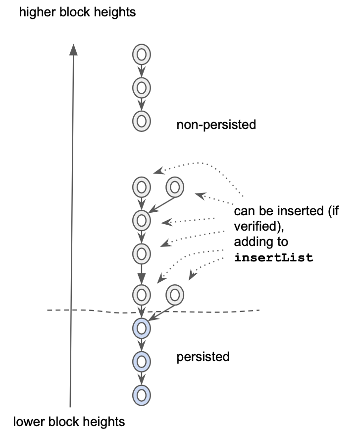
As shown in the illustration above, the chain links "eligible" for insertion are detected and added to the insertList, which is
a member field of the header download process object. How does this detection happen? One way would be to somehow keep the record
of the persisted chain links with the highest block height, and then periodically check if they become connected to some
non-persisted chain links. However, this would be inefficient. Instead, if we look at the table of 4 operations performed in
the ProcessSegment function, we can notice that only extendUp and connect operations can create a situation where
persisted link is connected to a non-persisted link. And this is where (in the functions extendUp and connect) the insertList gets modified.
What happens periodically is the call to the function InsertHeaders declared in the turbo/stages/headerdownload/header_algos.go file.
This function attempts the iteration over insertList. It only considers the chain links that have been pre-verified (if the are
below the preverifiedHeight) or otherwise it verifies them just before insertion. As mentioned earlier, this mechanism will change.
Very likely, there will be another function, let's say VerifyHeaders that will iterate over insertList and issue asynchronous
verification requests to the "Consensus Engine" for those headers that are not marked as verified. It is likely that chain links
will need an extra field, let's say verifyDeadline that would contain the time when the previously issued verification request
expires and a new one needs to be issued (to deal with potentially unreliable Consensus Engine). After such modification, the
InsertHeaders function will not perform the header verification itself, but instead will simply expect the verified flag to be
set for any header before it can get inserted into the database.
If the header is selected for insertion, it gets removed from the insertList, and it also needs to be moved from non-persisted
priority queue to persisted priority queue. This is where the idx member field is useful, because it allows invoking heap.Remove(hd.linkQueue, link.idx) to remove the chain link from the non-persisted priority queue regardless whether it is on the top or
not. Note that if there is an error with insertion, the chain link gets removed from the non-persisted priority queue, but does not
get added to the persisted priority queue. Perhaps it is a bug that it does not get removed from all data structures altogether.
The actual insertion of the headers into the database is delegated to the function hf that is passed into InsertHeaders as an argument.
This indirection exists for two reasons: to make InsertHeaders function smaller in size, and also to assist writing unit tests
that do not necessarily need to insert anything into the database, but can keep headers ephemerally or simply do nothing.
Since the InsertHeaders function is one of the two places where the number of persisted chain links can increase (another place is
RecordFromDb function that is called once in the very beginning of the whole downloading process to read the initial set of
persisted chan links from the database), at the end of this function there is code that enforces the limit on the persisted chain links
in memory. Because there are no anchors below the "persisted links" line, and also the persisted link priority queue evicts the oldest
links first, there is no need to adjust next fields on the parent links (parent links would have been evicted before children) or
links field of the anchors (there are no anchors there), as it was done when limiting non-persisted chain links.
In the non-testing settings, the role of hf function passed to InsertHeaders for the actual insertion into the database, is played
by the FeedHeader function of the HeaderInserter type (note it is different from HeaderDownload type that is used as a "receiver"
for most other functions described earlier). The job of this function is to insert one header at a time. An object of type
HeaderInserter has all the necessary context to perform this job. For example, its member field batch is effectively a database handle
with some buffering attached to it (also called "mutation" sometimes). First of all, function FeedHeader tries to establish
whether the newly presented header will affect what will be considered the "best header" (or in other words, "tip of the canonical chain").
This could happen either due to adding a child header to the parent which was the "best header" (most common occurrence), or due to
so-called reorg, where an alternative branch becomes the place of the "best header". Currently, this check for whether the new header will
be the best header, is done by comparing "total difficulties", which is the concept taken from EtHash consensus, and "shoehorned" into
Clique consensus (by declaring that "out-of-order" signed headers have difficulty 1, and "in-order" signed headers have difficulty 2).
With the separation of Consensus Engine, this will need to change. Instead of relying on the notion of total difficulty, the insertion
process will need to (asynchronously) ask the Consensus Engine to compare the existing "best header" with the new header to see if the new
one is better than the "best". Most likely it will lead to further decomposition of the FeedHeader function.

In the case if the new header is to become the best header, and important thing to calculate is so-called forkingPoint. On the illustration
above, two cases of replacing of the best header are shown. The first is a trivial one, when the chain simply grows, and in this case
the previous best header (parent of the new header) is the forkingPoint (although, technically, there is no forking). In the second case,
there is actual forking, and the forkingPoint is found by traversing the headers from the new header via ParentHash "pointers", until
a header currently belonging to the "best chain" (or in other words, "canonical chain") is found. The processing of this second case
can be seen in the code of the FeedHeader function as the loop over ancestor, ancestorHeight and ancestorHash. As expected, the
loop terminates upon the equality of the canonical hash of given height (ch) and the ancestorHash.
If the best header is getting replaced, a couple of special records in the database get updated: HeadHeaderHash (hash of the "best header"),
StageProcess(stages.Headers) - block number indicating how far the "Headers" stage has advanced. Also, unwindPoint member field of
the HeaderInserter is being updated, so that at the end of the inserting a group of block, the "deepest" forking point is known, and
this is where the unwinding of all stages will need to be performed.
Regardless of whether the best header is replaced or not, two other database records are updated - total difficulty of the new header (this is likely to be moved to the Consensus Engine in the future), and the mapping of hash of the new header to its RLP encoding.
Construction of the Headers Sync stage
Now most of the parts necessary for the construction of the Headers Sync stage have been described. The code of the Headers Sync stage
(not yet integrated into the default Staged Sync of turbo-geth, TODO will be posted further down) is in eth/stagedsync/stage_headers_new.go.
As usual, a definition of a sync stage consists of two functions. The first function is invoked when the sync is moving in forward direction,
i.e. when the block numbers are increasing. The second function is invoked only when there is unwinding (this is triggered when "best header"
is replaced by a new header, which is not the direct descendant of the "best header", as illustrated earlier). For the Headers Sync stage,
these two functions are HeadersForward and HeadersUnwind.
Merklization of flat state
Ethereum network produces checkpoints of the Ethereum State after every block. These checkpoints come in a form of
32-byte binary string, which is the root hash of the Merkle tree constructed out of the accounts in the state. This root
hash is often referred to as "State root". It is part of block header, and is contained in the field Root of the type
Header core/types/block.go
Prior to Byzantium release, the state root was also part of every transaction receipt, and was contained in the
field PostState
of the type Receipt core/types/receipt.go.
To keep the Merkle Patricia trie of Ethereum state balanced, all the keys (either addresses of Ethereum accounts and
contracts, or storage positions within contract storage) are converted into their respective hashes using Keccak256
hash function.
PlainStateBucket stores state with keys before hashing, CurrentStateBucket store same data but keys are hashed.
Hexary radix "Patricia" tree
Ethereum uses hexary (radix == 16) radix tree to guide the algorithm of computing the state root. For the purposes of illustrations, we will use trees with radix 4 (because radix 16 requires many more items for "interesting" features to appear). We start from a set of randomly looking keys, 2 bytes (or 8 quaternary digits) each.

Next, we sort them in lexicographic order.

Next, we introduce the notion of a prefix group. Collection of adjacent keys form a prefix group if these keys share the same prefix, and no other keys share this prefix. Here are the prefix groups for our example:
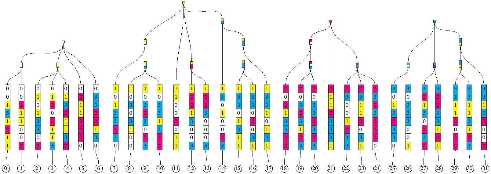
The entire collection of keys form one implicit prefix group, with the empty prefix.
Merkle Patricia tree hashing rules first remove redundant parts of each key within groups, making key-value pairs
so-called "leaf nodes". To produce the hash of a leaf node, one applies the hash function to the two-piece RLP (
Recursive Length Prefix). The first piece is the representation of the non-redundant part of the key. And the second
piece is the representation of the leaf value corresponding to the key, as shown in the member function hashChildren
of the type hasher turbo/trie/hasher.go, under the *shortNode case.
Hashes of the elements within a prefix group are combined into so-called "branch nodes". They correspond to the
types duoNode (for prefix groups with exactly two elements) and fullNode in the
file turbo/trie/node.go. To produce the hash of a branch node, one represents it as an array
of 17 elements (17-th element is for the attached leaf, if exists). The positions in the array that do not have
corresponding elements in the prefix group are filled with empty strings. This is shown in the member
function hashChildren of the type hasher turbo/trie/hasher.go, under the *duoNode
and
*fullNode cases.
Sometimes, nested prefix groups have longer prefixes than 1-digit extension of their encompassing prefix group, as it is
the case in the group of items 12, 13 or in the group of items 29, 30, 31. Such cases give rise to so-called "
extension nodes". However, the value in an extension node is always the representation of a prefix group, rather than a
leaf. To produce the hash of an extension node, one applies the hash function to the two-piece RLP. The first piece is
the representation of the non-redundant part of the key. The second part is the hash of the branch node representing the
prefix group. This shown in the member function hashChildren of the
type hasher turbo/trie/hasher.go, under the *shortNode case.
This is the illustration of resulting leaf nodes, branch nodes, and extension nodes for our example:

Separation of keys and the structure
Our goal here will be to construct an algorithm that can produce the hash of the Merkle Patricia Tree of a sorted sequence of key-value pair, in one simple pass (i.e. without look-aheads and buffering, but with a stack). Another goal (perhaps more important) is to be able to split the sequence of key-value pairs into arbitrary chunks of consecutive keys, and reconstruct the root hash from hashes of the individual chunks (note that a chunk might need to have more than one hash).
Let's say that we would like to split the ordered sequence of 32 key-value pairs into 4 chunks, 8 pairs in each. We would then like to compute the hashes (there might be more than one hash per chunk) of each chunk separately. After that, we would like to combine the hashes of the chunks into the root hash.
Our approach would be to generate some additional information, which we will call "structural information", for each chunk, as well as for the composition of chunks. This structural information can be a sequence of these "opcodes":
LEAF length-of-keyLEAFHASH length-of-keyEXTENSION keyEXTENSIONHASH keyBRANCH set-of-digitsBRANCHHASH set-of-digitsHASH number-of-hashes
The description of semantics will require the introduction of two stacks, which always have the same length. One of the
stacks (we call it "hash stack") contains hashes produced by opcodes. Another stack (we call it "node stack")
contains leaf nodes, branch nodes, or extension nodes of the trie being built. In some cases, where the presence of a
node is not required, the corresponding entry in the node stack is empty, or nil. As well as the stack, the
description requires the introduction of two input sequences (or "tapes"). The first tape contains key-value pairs, each
pair can be viewed as two opaque binary strings of arbitrary length, usually with the requirement that the whole
sequence is sorted by the lexicographic order of the keys, and all the keys are distinct. The second tape contains
hashes, each 32 bytes long.
N.B. Though there two stacks, we can sometimes just say "the stack", since they are always of the same size and are operated upon in unison. For example, when we say that XXX pops something from the stack, we mean that XXX pops 1 item from the hash stack and 1 item from the node stack, but then only one of those two items may be used later and the other may be discarded by XXX.
LEAF opcode consumes the next key-value pair from the first tape, creates a new leaf node and pushes it onto the node
stack. It also pushes the hash of that node onto the hash stack. The operand
length-of-key specifies how many digits of the key become part of the leaf node. For example, for the leaf 11
in our example, it will be 6 digits, and for the leaf 12, it will be 4 digits. Special case of length-of-key
being zero, pushes the value onto the stack and discards the key.
LEAFHASH has almost the same semantics as LEAF, with the difference that it does not need to produce the leaf node,
but only its hash (which can be more efficient in terms of allocations). It places nil onto the node stack.
EXTENSION opcode has a key as its operand. This key is a sequence of digits, which, in our example, can only be of
length 1, but generally, it can be longer. The action of this opcode is to pop one item from the stack, create an
extension node with the key provided in the operand, and the value being the item popped from the stack, and push this
extension node onto the node stack (and push its hash onto the hash stack).
EXTENSIONHASH has almost the same semantics as EXTENSION, with the difference that it does not need to produce the
extension node, but only its hash (which can be more efficient in terms of allocations). It places nil onto the node
stack.
BRANCH opcode has a set of hex digits as its operand. This set can be encoded as a bitset, for example. The action of
this opcode is to pop the same number of items from the stack as the number of digits in the operand's set, create a
branch node, and push it onto the node stack (and push its hash onto the hash stack). Sets of digits can be seen as the
horizontal rectangles on the picture prefix_groups_4. The correspondence between digits in the operand's set and the
items popped from the stack is as follows. The top of the stack (the item being popped off first)
corresponds to the highest digit, and the item being popped off last corresponds to the lowest digit in the set.
BRANCHHASH opcode is similar to the BRANCH with the difference is that instead of constructing the branch node, it
only creates its 32-byte hash. It places hash of the node onto the hash stack, and nil onto the node stack.
HASH opcode takes specified number of hashes from the input sequence (tape) of hashes, and places them on the hash
stack. It also places the same number of nil entries onto the node stack. The first item consumed ends up the deepest
on the stack, the last item consumed ends up on the top of the stack.
This is the structural information for the chunk containing leaves from 0 to 7 (inclusive):
LEAF 5
LEAF 5
BRANCH 12
LEAF 5
LEAF 5
LEAF 5
BRANCH 023
LEAF 6
LEAF 6
BRANCH 0123
LEAF 5
After executing these opcodes against the chunk, we will have 2 items on the stack, first representing the branch node (
or its hash) for the prefix group of leaves 0 to 6, and the second representing one leaf node for the leaf
7. It can be observed that if we did not see what the next key after the leaf 7 is, we would not know the operand
for the last LEAF opcode. If the next key started with the prefix 101 instead of 103, the last opcode could have
been LEAF 4 (because leaves 7 and 8 would have formed a prefix group).
After hashing the first chunk, the tree would look as follows. 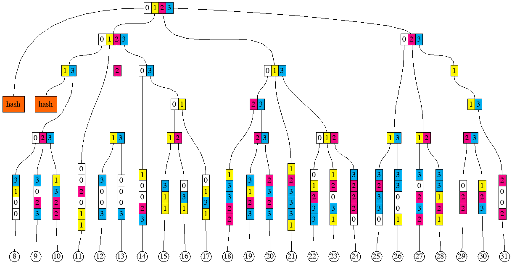
If we apply the same to produce the next chunk of 8 leaves, we will get to the following picture.

And, after hashing the two remaining chunks. 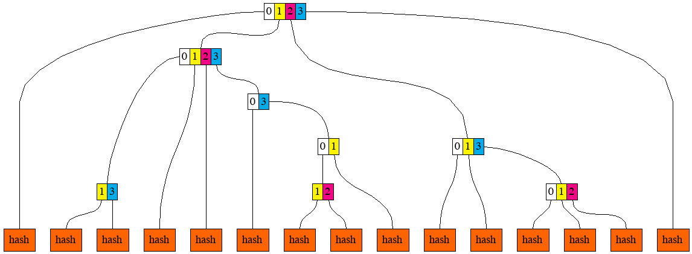
Now, if we were given the sequence of these hashes, we need to combine them to produce the root hash.
HASH 3
BRANCH 13
HASH 5
BRANCH 12
HASH 1
BRANCH 01
BRANCH 03
BRANCH 0123
HASH 5
BRANCH 012
BRANCH 013
HASH 1
BRANCH 0123
These opcodes are implemented by the type HashBuilder (implements the interface structInfoReceiver)
in turbo/trie/hashbuilder.go
Multiproofs
Encoding structural information separately from the sequences of key-value pairs and hashes allows describing
so-called "multiproofs". Suppose that we know the root hash of the sequence of key-value pairs for our example, but we
do not know any of the pairs themselves. And we ask someone to reveal keys and value for the leaves 3, 8, 22
and 23, and enough information to prove to us that the revealed keys and values indeed belong to the sequence. Here is
the picture that gives the idea of which hashes need to be provided together with the selected key-value pairs.
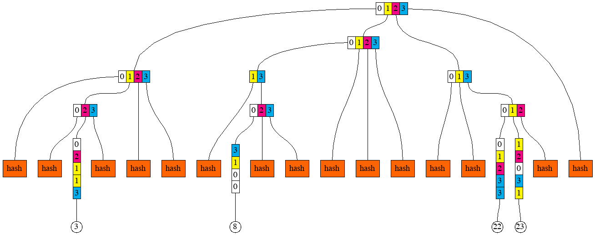
And here is the corresponding structural information:
HASH 2
LEAF 5
HASH 1
BRANCH 023
HASH 2
BRANCH 0123
HASH 1
LEAF 4
HASH 2
BRANCH 023
HASH 3
BRANCH 0123
HASH 2
LEAF 5
LEAF 5
BRANCH 012
BRANCH 013
BRANCH 0123
We can think of a multiproof as the combination of 3 things:
- Sequence of those 4 key-value pairs
- Sequence of 15 hashes
- Structural information that lets us compute the root hash out of the sequences (1) and (2)
Generating the structural information from the sequence of keys
In order to devise an algorithm for generating the structural information, we return to this picture
It can then be readily observed that the first item in any prefix group has this property that its common prefix with the item immediately to the right (or empty string if the item is the very last) is longer than its common prefix with the item immediately to the left (or empty string if the item is the very first). Analogously, the last item in any prefix group has the property that its common prefix with the item immediately to the left is longer than its common prefix with the item immediately to the right.
The algorithm proceeds in steps, one step for each key-value pair, in the lexicographic order of the keys. At each step,
it observes two keys (sequences of digits) - current, and succeeding. Because the algorithm emits opcodes that
manipulate the stack (technically, two stacks, but because they are always of the same lengths, we can just say "stack")
, it keeps track of what is currently on the stack. Each prefix group which is currently being
"assembled" by the algorithm, has some number of items on the stack. This is being tracked by an item in the groups
slice. The index of the item in the slice is equal to the length of the prefix of the prefix group. And the uint16
value of the item is the bitmask, with one bit per digit (and also per item on the stack). Whenever the algorithm emits
an opcode that would push something on the stack, one of the items in the groups slice gains one extra bit to its
bitmask. When the algorithm emits an opcode that would pop one or more things from the stack, the corresponding item
gets removed from the groups slice. The slice groups is started off empty and it is shared between steps.
Algorithm's step can also be invoked recursively from another step, with current and preceding keys specified by the
caller.
A step starts with computing the prefix of the smallest prefix group that the current key belongs to. It is either the
common prefix of current key and the preceding key or the common prefix of current key and the succeeding key, whichever
is longer (if they are the same length, then they are also equal, so no ambiguity there). If the common prefix with the
succeeding key is longer, then the new prefix group is being created. If necessary, groups slice is expanded (by
adding 0 items) so that it has the same length as the common prefix.
The digit of the current key immediately following the max common prefix is called "extra digit". The sequence of digits
of the current key following that extra digit is the remainder (which could be empty). The item in the groups slice
corresponding to the common prefix (basically groups[len(common prefix)]) is modified to include an extra bit
corresponding to the "extra digit". If this step of the algorithm was invoked on a key-value pair (non-recursively),
then a LEAF (or LEAFHASH)
opcode is emitted, with the operand being the length of the remainder (zero if the remainder is empty). If the step of
the algorithm was invoked recursively, and the remainder is not empty, an EXTENSION (or EXTENSIONHASH) opcode is
emitted instead, with the operand being the remainder. For example, for leaf 12, the lengths of the common prefix with
neighbours are 1 and 3. Therefore, this key will emit the opcode
LEAF 4, where 4 = 8 (original length) - 3 (max common prefix length) - 1 (one digit goes to the branch node for the
prefix group).
The following, optional, part of the step only happens if the common prefix of the current key and the preceding key is
longer or equal than the common prefix of the current key and the succeeding key, in other words, if at least one prefix
group needs to be "closed". Closing a prefix group means first emitting opcode BRANCH or BRANCHHASH. The value for
the operand is taken from the item in the groups slice, which corresponds to the length of the prefix for this group.
Once value is taken, groups slice is trimmed to remove the used item. Secondly, closing a prefix groups means invoking
the step of the algorithm recursively
(unless the group that was closed was the one with the empty prefix, which encompasses all the keys). For that recursive
invocation, the prefix of the closed group is used as the current key, and the succeeding key simply passed on.
Preceding key is found as the prefix of the current key of the length equal of the highest index of non-zero item in
the groups (in other words, the longest prefix of a prefix group which would have something on the stack). During the
recursive invocation, the slice groups
is trimmed to match the length of the preceding key that was found.
We will walk through the steps of the algorithm for the leaf 30, and then for the leaf 31. For 30, the key
is 33113123. Its max common prefix with neighbours is 3311. The common prefix with the preceding key is longer than
with the succeeding key, therefore the prefix group 3311 is being closed. The digit immediately following this prefix
is 3. Since this is a non-recursive invocation, and the remainder 123 is 3 digits long, opcode LEAF 3 is emitted.
The optional part of the step happens, and he opcode BRANCH 23 (closing the prefix group) is emitted. Slice groups
contained the bit for 2 in the item groups[4] already, and another bit for 3 has been added, therefore we
have 23 as the operand. Slice groups gets trimmed to contain only 4 items. After that, the step gets invoked
recursively with current key being 3311, and preceding key identified as 3 (there were no prefix group with
prefix 33 or 331 yet, this can be figured out by checking the groups slice, where the highest index with non-zero
item is 1).
In the recursive invocation of the step, max common prefix is 331. The common prefix with the succeeding key is longer
than with the preceding key, therefore a new prefix group 331 is created. Slice groups gets extended to 4 items, and
the fourth item
(group[3]) gets item containing one bit for digit 1. No more recursion.
For leaf 31 (key 33132002), max common prefix is 331. The common prefix with the preceding key is longer than with
the succeeding key, therefore the prefix group 331 is being closed. This is the group that was created during the step
for leaf 30 described above. The digit immediately following this prefix is 3. Corresponding bit is added to the
item groups[3]. Since this is a non-recursive invocation, opcode LEAF 4 is emitted (4 is the length of the
remainder 2002). The optional part of the step happens, opcode BRANCH 13 is emitted, and slice group is trimmed to
3 items to remove the item groups[3]. The step gets invoked recursively with current key being 331, and preceding
key identified as 3 (there were no prefix group with prefix 33).
In the recursive step, max common prefix is 3. The common prefix with the preceding key is longer than with the
succeeding key, therefore the prefix group 3 is being closed. The digit immediately following this prefix is 3. The
remainder 1 is non-empty, and since this is a recursive invocation, opcode
EXTENSION 1 is emitted. The optional part of the step happens, opcode BRANCH 023 is emitted for the prefix group 3
being closed. Slice groups is trimmed to just 1 item. The step gets invoked recursively again, with current key
being 3, and preceding key empty.
In the deeper recursive step, max common prefix is empty. Since the common prefix with the preceding key equals to the
common prefix with the succeeding key (they are both empty). The optional part of the step happens, opcode BRANCH 0123
is emitted, and groups is trimmed to become empty. No recursive invocation follows.
The step of this algorithm is implemented by the function GenStructStep
in turbo/trie/gen_struct_step.go.
Converting sequence of keys and value into a multiproof
One of the biggest difference between Erigon and go-ethereum is in the way the Ethereum state is persisted in the database. In go-ethereum, the model for persistence is Merkle Patricia tree. In Erigon, the model for persistence is sequence of key-value pairs, where keys are either derived from account addresses, or from storage indices. In this model, computing Merkle Patricia tree from part of data is a very commonly used operation. This operation is called " Resolution" because it normally arises from a need to look up (resolve) some keys and corresponding values, and later update them, thus requiring recomputation of the Merkle Patricia tree root.
We can use the concept of Multiproofs to define the resolution operation. If we have a set of key-value pairs, and we
need to "resolve" them, we effectively need to produce a multiproof for the given set of key-value pairs. To produce
such multiproof, we can use the algorithm for generating the structural information from the sequence of keys. However,
within the algorithm, choices need to be made between emitting BRANCHHASH and BRANCH opcodes (or, similarly,
between LEAF and LEAFHASH, and between EXTENSION and EXTENSIONHASH). Such choices are conceptually simple to
make - if max common prefix is also a prefix of any of the keys we are trying to resolve,
BRANCH should be emitted, otherwise, BRANCHHASH should be emitted. However, in order to make these choices
efficiently, the set of keys being resolved will be converted into a sorted list. Then, at each point when the algorithm
processes a key, it maintains references to two consecutive keys from that sorted list - one "LTE" (Less Than or Equal
to the currently processed key), and another "GT" (Greater Than the currently processed key). If max common prefix is
also prefix of either LTE or GT, then BRANCH opcode is emitted, otherwise, BRANCHHASH opcode is emitted. This is
implemented by the type ResolveSet in turbo/trie/resolve_set.go
Extension of the structure to support contracts with contract storage
When it is required to construct tries containing accounts as well as contract storage, and contract code, the set of opcodes making up the structural information need to be extended by four more. Apart from that, a new input sequence ( tape) is added, containing the bytecodes of contracts.
CODECODEHASHACCOUNTLEAF length field-setACCOUNTLEAFHASH length field-setEMPTYROOT
CODE opcode consumes the next item in the bytecode sequence, creates a code node and pushes it onto the node stack. It
also pushes the hash of the byte code onto the hash stack.
CODEHASH opcode consumes the next hash from the hash sequence, pushes it onto the hash stack, and pushes nil into
the node stack.
ACCOUNTLEAF opcode is similar to LEAF. It consumes the next item from the key tape. The rest of the semantics
depends on the value of the field-set. Field set can be respresented by a bitmask. In that case, bit 0 would
correspond to field 0, bit 1 (number 2) - to field 1, bit 2 (number 4) - to field 2. Currently, field 0 means account
nonce, field 1 means account balance, field 2 means contract storage, field 3 means contract code.
- If field 0 is present in the
field-set, the opcode consumes one item from the nonce tape (tape 0), otherwise it assumes default nonce (zero). This becomes the nonce of the newly created account/contract node. - If field 1 is present in the
field-set, the opcode consumes one item from the balance tape (tape 1), otherwise it assumes default balance (zero). This becomes the balance of the newly created account/contract node. - If field 2 is present in the
field-set, the opcode pops a node from the node stack and a hash from the hash stack. This node or hash (in this order of preference) becomes the storage of the newly created contract node. Storage root can be empty (that would introduced byEMPTYROOTopcode). - If field 3 is present in the
field-set, the opcode pops a code node from the node stack and a hash from the hash stack. This node or hash (in the order of preference) becomes the code or code hash of the newly created contract node.
Out of all the information collected through the tapes and the stacks (as directed by the field-set), an account leaf
node is constructed and pushed onto the node stack. Its hash is pushed onto the hash stack. Field set is introduced to
make the specification of what is an account extensible in a backwards compatible way. If a new field is added to the
account in the future, it can be introduced without a need to re-encode the pre-existing structures.
ACCOUNTLEAFHASH opcode's difference from ACCOUNTLEAF is that it does not push the leaf node onto the node stack,
pushing nil instead. The hash of would-be account leaf node is pushed onto the hash stack.
EMPTYROOT is a way of placing a special value signifying an empty node onto the node stack. It also pushes the
corresponding hash onto the hash stack. This opcode is introduced because there is no way of achieving its semantics by
means of other opcodes.
Merkle trie root calculation
Theoretically: "Merkle trie root calculation" starts from state, build from state keys - trie, on each level of trie calculates intermediate hash of underlying data.
Practically: It can be implemented as "Preorder trie traversal" (Preorder - visit Root, visit Left, visit Right). But, let's make couple observations to make traversal over huge state efficient.
Observation 1: CurrentStateBucket already stores state keys in sorted way. Iteration over this bucket will
retrieve keys in same order as "Preorder trie traversal".
Observation 2: each Eth block - changes not big part of state - it means most of Merkle trie intermediate hashes
will not change. It means we effectively can cache them. IntermediateTrieHashBucket stores "Intermediate hashes of all
Merkle trie levels". It also sorted and Iteration over IntermediateTrieHashBucket will retrieve keys in same order
as "Preorder trie traversal".
Implementation: by opening 1 Cursor on state and 1 more Cursor on intermediate hashes bucket - we will receive data in order of "Preorder trie traversal". Cursors will only do "sequential reads" and "jumps forward" - been hardware-friendly. 1 stack keeps all accumulated hashes, when sub-trie traverse ends - all hashes pulled from stack -> hashed -> new hash puts on stack - it's hash of visited sub-trie (it emulates recursive nature of "Preorder trie traversal" algo).
Imagine that account with key 0000....00 (64 zeroes, 32 bytes of zeroes) changed. Here is an example sequence which can be seen by running 2 Cursors:
00 // key which came from cache, can't use it - because account with this prefix changed
0000 // key which came from cache, can't use it - because account with this prefix changed
...
{30 zero bytes}00 // key which came from cache, can't use it - because account with this prefix changed
{30 zero bytes}0000 // Account which came from state, use it - calculate hash, jump to "next sub-trie"
{30 zero bytes}01 // key which came from cache, it is "next sub-trie", use it, jump to "next sub-trie"
{30 zero bytes}02 // key which came from cache, it is "next sub-trie", use it, jump to "next sub-trie"
...
{30 zero bytes}ff // key which came from cache, it is "next sub-trie", use it, jump to "next sub-trie"
{29 zero bytes}01 // key which came from cache, it is "next sub-trie" (1 byte shorter key), use it, jump to "next sub-trie"
{29 zero bytes}02 // key which came from cache, it is "next sub-trie" (1 byte shorter key), use it, jump to "next sub-trie"
...
ff // key which came from cache, it is "next sub-trie" (1 byte shorter key), use it, jump to "next sub-trie"
nil // db returned nil - means no more keys there, done
In practice Trie is not full - it means after account key {30 zero bytes}0000 may come {5 zero bytes}01 and amount of
iterations will not be big.